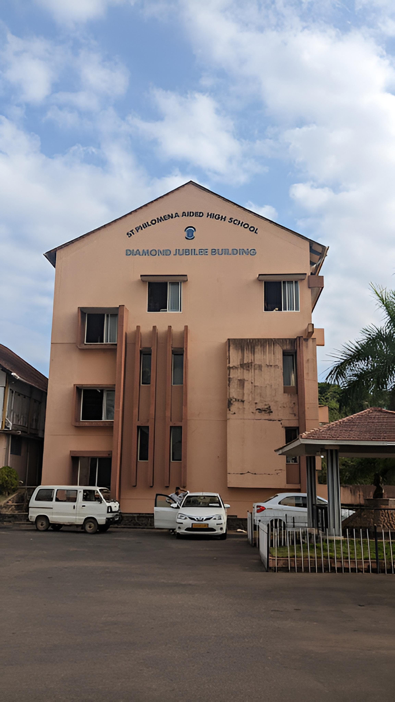

ST PHILOMENA SCHOOL,PUTTUR
The location of St. Philomena High School is Puttur, Dakshina Kannada. The year of establishment of St. Philomena High School is 1949. St. Philomena High School is a Co-Educational school. The student teacher ratio of St. Philomena High School can be approximated to be 1 teacher for every 42 students. It is a Secondary School (Class 9-10) , where lowest class is 8th and highest class is 10th. You can check other important information regarding the school like St. Philomena High School fee, their transport facility and other important information that you need to know regarding St. Philomena High School admission. Browse below to read everything you need to know about St. Philomena High School. Admissionschool provides you with the up to date information of every school across India and world.
